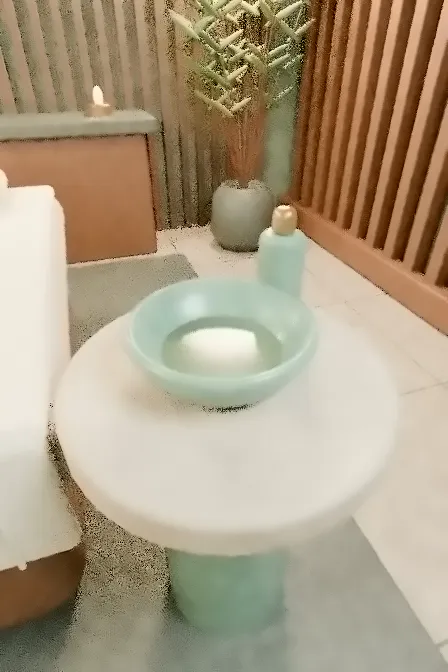

Maison de soins
Atelier
Serein
Un temps réservé à soi.
La maison
Du temps pour ralentir.
Atelier Serein est une maison de soins fictive. Chaque rituel commence par un échange, puis s’adapte à ce que vous recherchez, du repos à un massage plus ciblé.
Écouter
Parler de vos attentes et choisir l’intensité des gestes.
Préparer
Choisir le soin et l’huile qui vous conviennent.
Prendre le temps
Prolonger le repos de quelques minutes après le soin.
La carte des soins
Choisir son rituel.
Rituel du visage45 min
Un massage du visage, de la nuque et du cuir chevelu à l’huile tiède.
Massage à l’huile60 min
Un massage du corps dont la pression et les zones de travail se décident avec vous.
Visage et corps90 min
Un massage du corps prolongé par le rituel du visage.

Le rendez-vous
Un soin en trois temps.
- L’échange et le choix du soin
- Le soin en cabine
- Le retour au calme
Avant le rendez-vous
Questions fréquentes.
Faut-il choisir un soin avant de faire une demande ?
Vous pouvez choisir « Je souhaite un conseil » dans le formulaire.
Comment fonctionne la date souhaitée ?
Elle indique une préférence. Cette démonstration ne consulte aucun agenda et ne confirme aucun créneau.
Que se passe-t-il quand je termine ?
Un récapitulatif apparaît dans la fenêtre. La demande reste dans cette page.